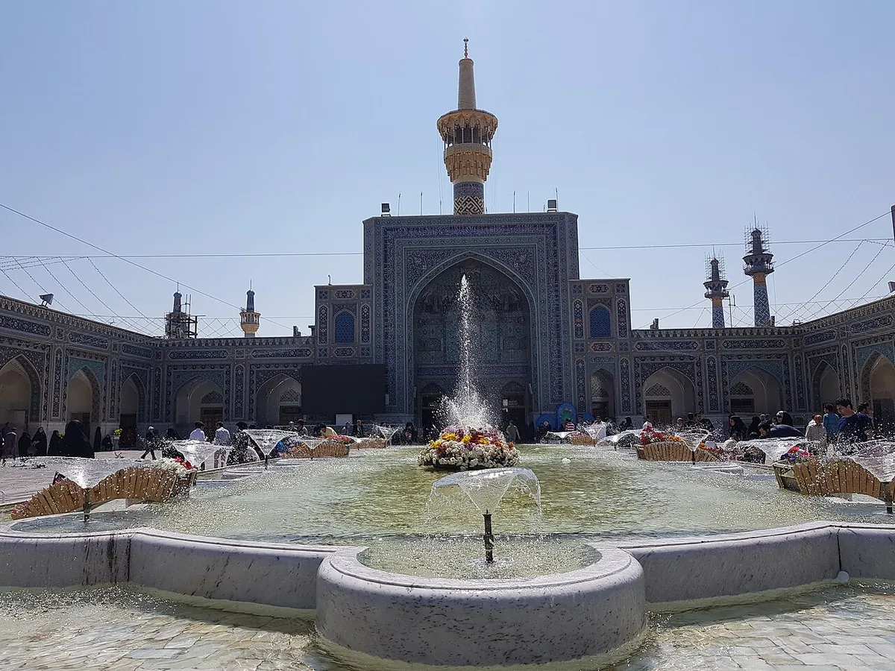

فنادق قرب حرم الإمام الرضا في مشهد: مقارنة حسب الشارع والميزانية

الإجابة المختصرة
لمقارنة الإقامة قرب حرم الإمام الرضا في مشهد، ابدأ بالمدخل الذي ستستخدمه واحتياجات أفراد مجموعتك، ثم قارن العنوان والمسافة الفعلية ووسائل الوصول والخدمات المعلنة. راجع المعلومات الحديثة من الفندق أو منصة الحجز، وتأكد منها قبل الحجز؛ فالأمثلة ليست ترتيباً للأفضل ولا ضماناً لجودة التجربة.
اختيار الفندق قرار عملي يتأثر بمدخل الحرم الذي ستستخدمه، وميزانيتك، وأفراد الأسرة، واحتياجات الحركة. تعرض هذه الصفحة أمثلة يمكن البدء منها اعتماداً على معلومات منشورة من مواقع الفندق أو منصات الحجز، وليست ترتيباً لأفضل الفنادق ولا ضماناً لجودة التجربة.
١. فندق مدينه الرضا
يعرض الموقع الرسمي للفندق نفسه بوصفه فندقاً من فئة خمس نجوم في شارع شيرازي، ويذكر قربه من مدخل شارع شيرازي إلى الحرم، إضافة إلى غرف وأجنحة وخيارات مطاعم وخدمات منها النقل عند التنسيق المسبق. هذه معلومات منشورة من الفندق نفسه وليست تقييماً مستقلاً.
الموقع الرسمي لفندق مدينه الرضا · الغرف والأجنحة
مناسب للمقارنة إذا كانت الأولوية لديك هي الإقامة الفندقية ذات الخدمات المتعددة والقرب من جهة شارع شيرازي. اسأل عن نوع الغرفة، وما إذا كان النقل أو الوجبات ضمن السعر، وعن سياسة الإلغاء.
٢. فندق قصر الضيافة قدس
تعرض منصة فلایتودی الفندق في بداية شارع شيرازي وتذكر مسافة منشورة تقارب ٣٦١ متراً إلى حرم الإمام الرضا، مع مرافق مدرجة مثل المطعم والواي فاي وخدمات الغسيل. المسافة تقريبية ومصدرها منصة الحجز؛ افحص مسار المشي الفعلي والمدخل الذي يناسبك.
تحقق من توافر الغرف وتفاصيل الحجز، واسأل عن الضوضاء وأوقات الوجبات وسياسة التعديل أو الإلغاء، خصوصاً في المواسم المزدحمة.
٣. فندق هليا
تذكر منصة إقامة۲۴ عنوان الفندق في شارع الإمام رضا، الإمام رضا ٨، وتعرضه ضمن الفنادق الثلاث نجوم. كما تعرض المنصة مرافق منها المصعد والاستقبال على مدار الساعة، وتذكر مسافة منشورة تقارب ٨٣٠ متراً إلى مدخل باب الرضا؛ تحقق من المسار الفعلي قبل اتخاذ القرار.
تفاصيل فندق هليا على إقامة۲۴ · عرض الموقع على الخريطة
قد يكون خياراً للمقارنة لمن يريد مراجعة إقامة في شارع الإمام رضا، لكن لا تعتمد على التصنيف أو المسافة وحدهما؛ افحص صور الغرفة الحديثة والمرافق الفعلية وشروط الحجز.
جدول مقارنة سريع
| الفندق | الموقع المنشور | ما ينبغي التحقق منه |
|---|---|---|
| مدينه الرضا | شارع شيرازي؛ يذكر الموقع قربه من مدخل شارع شيرازي | نوع الغرفة، النقل، الوجبات وسياسة الإلغاء |
| قصر الضيافة قدس | بداية شارع شيرازي؛ منصة الحجز تذكر نحو ٣٦١ متراً إلى الحرم | المسار الفعلي، التوفر، تفاصيل الخدمات |
| هليا | شارع الإمام رضا، الإمام رضا ٨؛ منصة الحجز تذكر نحو ٨٣٠ متراً إلى باب الرضا | نوع الغرفة، الخدمات الحالية، شروط الإلغاء |
المعلومات أعلاه مقتبسة بالمعنى من صفحات المصادر المرتبطة. قد تتغير البيانات أو تختلف طريقة احتساب المسافة، لذلك راجع المصدر قبل الحجز.
قائمة تحقق قبل دفع أي مبلغ
- أرسل تاريخ الوصول والمغادرة وعدد البالغين والأطفال وأعمارهم.
- اطلب السعر النهائي شاملاً الوجبات والرسوم، واطلب توضيح العملة.
- تحقق من اسم الفندق وعنوانه ورقم الحجز واسم الجهة التي تستلم الدفع.
- اقرأ شروط الإلغاء والتعديل والاسترداد قبل التحويل.
- إذا كان معك كبير سن أو شخص محدود الحركة، اسأل عن مسافة المشي الفعلية والمداخل والدرج والمصعد.
الفندق أم الشقة الفندقية؟
قد يناسب الفندق من يريد خدمات استقبال وتنظيفاً وفق نظام المنشأة، بينما قد تكون الشقة الفندقية خياراً للعائلة التي تحتاج مساحة أو ترتيبات معيشية مختلفة. لا يكفي اسم نوع الإقامة للحكم؛ راجع الخدمات الفعلية وشروطها.
اسأل عن عدد الأسرّة، وسعة الغرفة، والمصعد، وإمكانية الوصول، وسياسة الأطفال، وأي رسوم إضافية. اطلب تأكيداً مكتوباً للتفاصيل المهمة قبل الدفع.
كيف تقارن الموقع؟
لا تكتفِ بعبارة «قريب من الحرم». تحقق من عنوان المنشأة، والطريق الفعلي إلى المدخل الذي تفضله، وإمكانية الوصول سيراً على الأقدام، ومدى ملاءمة الطريق لكبار السن أو الأطفال.
إذا كانت لديك مواعيد علاجية أو تحتاج إلى سيارة، فوازن بين القرب من الحرم وسهولة التنقل إلى الوجهات الأخرى. موقع مثالي لشخص قد لا يكون الأفضل لأسرة مختلفة الاحتياجات.
شارع الإمام الرضا
عند مقارنة مكان إقامة في شارع الإمام الرضا، اطلب العنوان ورقم المبنى أو رابط الخريطة، وتحقق من طريق المشي الفعلي إلى المدخل الذي تنوي استخدامه. اسأل عن الضوضاء في ساعات الذروة وإمكانية وصول السيارة إلى المدخل، ولا تكتفِ بعبارة «قريب من الحرم».
شارعا شيرازي وطبرسي
إذا وجدت خيارات في شيرازي أو طبرسي، قارن مسافة المشي الفعلية والميل أو الدرج إن كان مهماً لأفراد الأسرة، وموقع الخدمات القريبة وطريقة الوصول بالأمتعة. لا يعني ذكر اسم الشارع أن كل فندق فيه يملك مستوى خدمة أو سهولة وصول واحدة.
منطقة نواب صفوي ومناطق أخرى
استخدم العنوان الدقيق لتقييم الطريق اليومي إلى الحرم والمتاجر والنقل، واسأل عن إمكانية الوصول بالسيارة في أوقات الازدحام. لا تفترض أن الأقرب على الخريطة هو الأنسب إذا كان الطريق أو مدخل الفندق غير ملائم لاحتياجاتك.
متى يناسبك الفندق الاقتصادي؟
قد يناسب من يقضي معظم وقته خارج الغرفة ويحتاج إلى مكان نظيف ونوم مريح وموقع عملي. تحقق من مساحة الغرفة والحمام والتدفئة أو التبريد والنظافة والاستقبال والمصعد؛ فالسعر الأقل لا يضمن توافر كل خدمة.
متى تستحق الخدمات الإضافية؟
قد تكون المطاعم داخل الفندق أو الغرف الأوسع والخدمات الإضافية مفيدة للعائلات أو الإقامة الطويلة. اسأل إن كانت الوجبات والنقل والخدمات المذكورة داخلة في السعر أم تُحسب منفصلة.
أسعار الليلة التقريبية قرب الحرم
أرقام استرشادية بالدولار الأمريكي للغرفة الليلة، جُمعت من مواقع حجز منشورة. تتغير بحسب الموسم والتوفر، وتكون عادة أعلى على المنصات الدولية منها في الحجز المباشر.
| الفئة | نطاق الليلة | ما رُصد في المصادر |
|---|---|---|
| اقتصادي / 3 نجوم | 30 – 75 دولاراً | أمثلة منشورة: فنادق اقتصادية على شارع الإمام الرضا بين نحو 30 و65 دولاراً؛ متوسط 3 نجوم على Trip.com نحو 74 دولاراً. |
| 4 نجوم | 50 – 125 دولاراً | نحو 50–75 دولاراً في فنادق مثل فردوس بحسب Hamintour؛ متوسط 4 نجوم على Trip.com نحو 122 دولاراً. |
| 5 نجوم | 55 – 135 دولاراً | تبدأ بعض الفنادق من نحو 53–72 يورو بحسب OrientTrips؛ متوسط 5 نجوم على Trip.com نحو 132–135 دولاراً. |
أمثلة لأسعار «تبدأ من» منشورة على Trip.com: فندق جواد من نحو 53 دولاراً، وفندق الماس 2 من نحو 58 دولاراً، وفندق القصر الذهبي من نحو 59 دولاراً. لا تعتمد على هذه الأرقام وحدها؛ اطلب السعر النهائي لتواريخك.
احسب التكلفة النهائية
اطلب عرضاً مكتوباً يوضح التواريخ وعدد الضيوف ونوع الغرفة والوجبات والرسوم إن وجدت ومواعيد الدخول والخروج وسياسة الإلغاء. لا تعتمد على سعر قديم في مقال أو منشور؛ السعر والتوفر يحتاجان إلى تأكيد مباشر.
اقرأ التقييمات بحذر
ابحث عن تعليقات حديثة تتناول النظافة والضوضاء والموقع والتعامل مع العائلات. انتبه إلى تاريخ التقييم ونوع الغرفة، ولا تعتبر التقييمات وحدها إثباتاً لكل خدمة أو ضماناً لتجربتك.
اختيار الفندق حسب نوع المسافر
للمسافر الفردي قد تكون سهولة الوصول والاستقبال الواضح أهم من المرافق التي لن يستخدمها. للعائلة، تحقق من عدد الأسرة الفعلي وسياسة الأطفال وتكلفة السرير الإضافي. ولمن يصطحب كبير سن أو شخصاً محدود الحركة، اسأل عن الدرج والمصعد والمسافة إلى المدخل ومسار المشي، لا عن المسافة الخطية وحدها.
إذا كنت ستغادر الفندق كثيراً للزيارة، قارن وقت التنقل وتكلفته مع فرق سعر الغرفة. وإذا كانت الراحة داخل الفندق أولوية، تحقق من الضوضاء والوجبات وساعات الخدمة من مصدر حديث.
قائمة تحقق قبل تأكيد الحجز
- اسم الفندق ونوع الغرفة وعدد الأسرة مكتوبة في التأكيد.
- السعر النهائي والعملة والوجبات والرسوم الإضافية واضحة.
- سياسة الإلغاء والتعديل والاسترداد موضحة كتابةً.
- عنوان الفندق ورابط الخريطة والمدخل المناسب مؤكدة.
مصادر الأرقام
جُمعت الأرقام من مواقع حجز وسفر منشورة علناً بين 2025 و2026، وراجعناها بتاريخ 4 نوفمبر 2026. هي نطاقات استرشادية بالدولار الأمريكي وليست عروضاً ملزمة.
عن الأسعار في هذا الدليل
الأرقام المذكورة بالدولار الأمريكي، وهي نطاقات استرشادية جمعناها من مواقع حجز وسفر منشورة علناً. ولأن الأسعار تتغير بشدة بحسب الموسم وسعر الصرف وتوفر الغرف والمقاعد، نؤكد لك السعر الحالي عند التواصل بحسب تاريخ سفرك وعدد المسافرين، ونوضح ما يشمله وما لا يشمله قبل أي التزام.
ننصحك بالمقارنة: اطلب عروضاً من أي مقدّم خدمة آخر في مشهد، ثم قارنها بعرضنا من حيث السعر النهائي ووضوح التفاصيل وجودة الخدمة. نثق أنك ستجد عندنا خدمة أكثر إنصافاً وجودة، ونرحب بأن تحكم بنفسك. واطلب دائماً تأكيد السعر والتفاصيل كتابةً قبل الدفع.
أسئلة شائعة
هل الفندق الأقرب إلى الحرم هو الأفضل دائماً؟
ليس بالضرورة؛ قارن سهولة الوصول والسعر النهائي والهدوء والخدمات واحتياجات أفراد الأسرة، وتحقق من المسار الفعلي على الخريطة.
هل المسافات المذكورة ثابتة؟
المسافات المذكورة من مصادر الحجز أو الفندق وقد تختلف بحسب البوابة والمسار المختار؛ تحقق من الطريق الفعلي قبل الحجز.
هل الأسعار في هذه الصفحة محدثة؟
لا تعرض هذه الصفحة أسعاراً ثابتة؛ السعر والتوفر يتغيران حسب التاريخ ونوع الغرفة وعدد الضيوف، ويجب تأكيدهما مباشرة.
كيف أتحقق من خدمات الفندق؟
راجع صفحة الفندق أو منصة الحجز الحالية، واطلب تأكيداً مكتوباً للخدمات المهمة مثل المصعد والوجبات والنقل وسياسة الإلغاء.
هل يمكن ضمان توفر الغرف؟
لا؛ التوفر لا يُضمن إلا بعد تأكيد الحجز من الجهة التي ستستقبل الدفع وتصدر تأكيد الحجز.
هل تحتاج إلى مساعدة في المقارنة؟
جهّز التواريخ وعدد المسافرين واحتياجاتهم، ثم تواصل معنا لطلب مقارنة الخيارات المتاحة. يجب تأكيد السعر والتوفر وشروط الحجز قبل الدفع.
التعرف إلى خدمات التنسيق